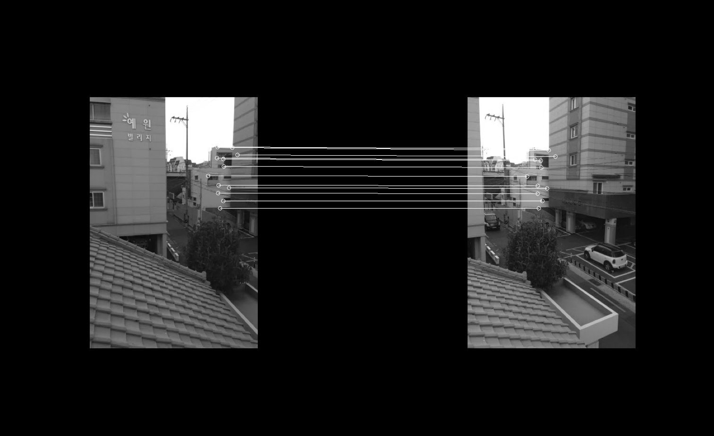
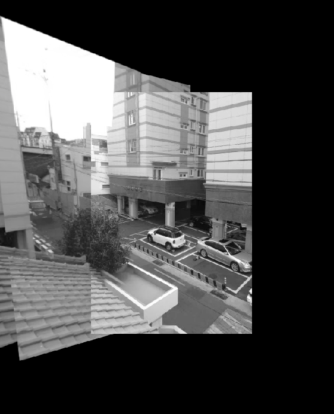

Adaptive non maximal supression on features
Below are the features that are found, from running harris corner detection, and adaptive non maximal suppression. Adaptive non maximal supression is an algorithm that works by taking in all the found points in the image, and taking the top n (in my case 500), features that satisfy a given constraint. The constraint involves maximizing the distances between features with different corner strengths. This creates an even spread of features over the image.
Full feature matching from features
In this part, I build sift-feature boxes around the top 500 harris features. These feature boxes are built by taking a 40x40 box around the corner point, then downsampling to 8x8 (the downsampling effectively taking the low frequencies). I then do a brute force search over all feature boxes to find boxes. I use the Lowe thresholding strategy of (F-NN1) / (F-NN2) > threshold to figure out if the match is actually good. My threshold is set to .5
 Full feature match
Full feature match
|
RANSAC
To deal with the outliers that ruin everything, I implement RANSAC. The algorithm is conceptually simple, essentially loop a couple thousand times over all the points and compute Homographies, and see which set results in the most agreeing points. This gives a good set of corners.
|

Match with RANSAC discarding outliers
|
Results
Homographies are there computed from the RANSAC features, and the images are warped together.
|

Result (auto-stitched)
|
Result (manual)
|
Other autostitching results